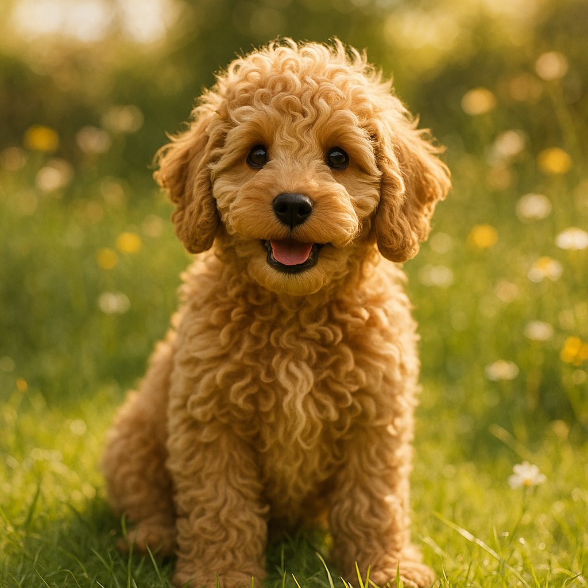
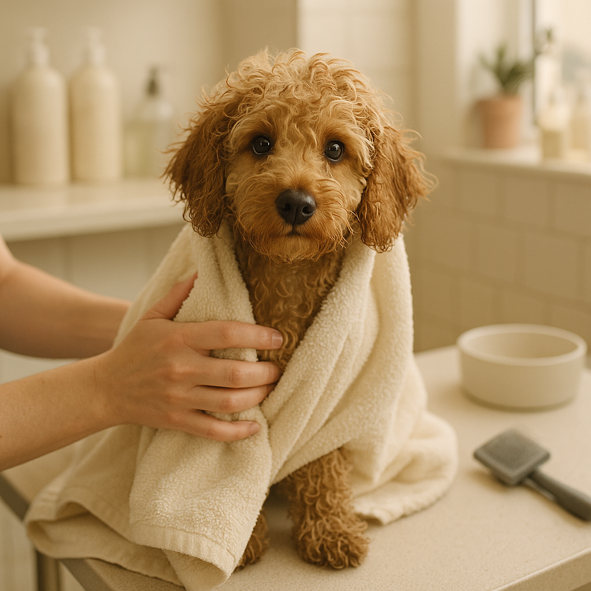

Cockapoo Cost of Ownership UK — The Complete Guide
Contents
What Is a Cockapoo?
A Cockapoo is a cross between a Cocker Spaniel and a Poodle (usually a Miniature or Toy Poodle). They're one of the UK's most popular "designer breeds" due to their intelligence, affectionate nature, and low-shedding coat.
Cockapoos come in different sizes depending on the Poodle parent:
- Toy Cockapoo: 12–18cm, 2–6kg
- Miniature Cockapoo: 25–38cm, 6–13kg
- Standard Cockapoo: 38cm+, 13kg+
This guide focuses on Miniature Cockapoos, the most common in UK homes. Costs scale differently for toy and standard sizes.
Reality Check
Cockapoos are not "cheaper" dogs because they're crossbreeds. They're high-maintenance, particularly for grooming. Budget £3,500–6,000 in the first year and £1,300–2,500 annually ongoing.
Purchase Price: Breeder vs Rescue
Reputable Breeder
A well-bred Cockapoo from a health-tested breeder costs £1,500–3,000. Prices vary by:
- Breeder reputation and health testing (£2,000–3,000 for top breeders)
- Pedigree and bloodline (£1,500–2,500 for standard quality)
- Size (Toy usually more expensive; Standard less)
- Coat colour rarity (some colours command premium prices)
What you get: Health tested parents, health guarantee, support from breeder, known lineage
Puppy Farmers & Backyard Breeders
Cheap Cockapoos (£500–1,000) often come from unregistered breeders with untested parents. Red flags:
- No health testing (parents not screened for genetic conditions)
- Impulse breeding from "cute dog pairs"
- Puppies sold very young (before 8 weeks)
- No lifetime support or guarantees
Reality: A cheap puppy often means expensive vet bills later. Genetic issues (luxating patella, eye problems) can cost thousands to treat.
Rescue
Adopting a Cockapoo from rescue costs £150–400 (adoption fee). Rescued Cockapoos are often adults, already trained, and vaccines/neutering included in the fee.
Where to find: Cockapoo Rescue UK, Dogs Trust, Battersea, breed-specific rescues

Annual Ongoing Costs (After Year 1)
Food
Miniature Cockapoos eat 150–250g of high-quality food daily. Annual cost:
- Standard dry kibble: £400–600/year (£1.20–1.80/day)
- Premium kibble: £600–900/year (£1.80–2.50/day)
- Raw or fresh food: £800–1,200/year (£2.50–3.50/day)
Many owners feed Tails.com (personalised nutrition), Butternut Box, or similar fresh delivery: £1,000–1,500/year. Budget £500–900 conservatively.
Grooming (The Major Expense)
This is crucial: Cockapoos have a non-shedding but high-maintenance coat. Professional grooming every 6–8 weeks is essential, not optional.
- Professional grooming: £40–80 per visit (varies by region and groomer)
- Frequency: Every 6–8 weeks (6–8 appointments per year)
- Annual grooming cost: £240–640 (6 visits at £40) to £640 (8 visits at £80)
Reality: Many owners spend £300–600 annually on grooming alone. This is non-negotiable—skipping grooming leads to matted coat, skin problems, and vet visits.
Insurance
Cockapoos are prone to joint and eye issues, making insurance valuable. Annual cost:
- Budget insurance: £200–350/year
- Mid-range insurance: £350–600/year
- Premium insurance: £600–900/year
Recommended: Lifetime cover (£400–700/year) to protect against chronic conditions like luxating patella.
Routine Vet Care
- Annual health check: £50–100
- Vaccinations: £50–100 (after initial vaccines)
- Flea/tick/worm treatment: £100–200/year (if not covered by insurance)
- Dental cleaning: £200–400 (every 2–3 years, not annually)
Total routine vet: £200–400/year
Accessories & Miscellaneous
- Toys, beds, leads, collar: £100–200/year
- Training classes (optional): £100–300/year
Total Annual Costs (Ongoing)
- Food: £500–900
- Grooming: £300–600
- Insurance: £400–700
- Routine vet: £200–400
- Accessories/extras: £100–300
- TOTAL: £1,500–2,900/year
Most Cockapoo owners should budget £1,800–2,300 annually for routine care.
First Year Costs (Higher Than Ongoing)
Year 1 is expensive due to initial setup and vaccinations:
- Puppy purchase: £1,500–3,000
- Initial vet visits & vaccinations: £150–300 (3 sets of vaccinations)
- Microchipping: £20–30
- Neutering/spaying: £200–400 (usually at 6 months)
- Equipment (crate, bed, food bowls, lead, collar): £150–300
- Insurance (annual): £400–700
- Food (first year): £500–900
- Grooming (first year): £300–600
- Training class (strongly recommended): £100–300
- Miscellaneous/unexpected: £200–400
Total First Year: £3,500–7,000+
Budget £5,000 as a realistic figure for the first year. If you purchase from a breeder at £2,000 and add the above, you're looking at £7,000+.

Grooming: Why It's Non-Negotiable
The Poodle coat is low-shedding but requires constant maintenance. A Cockapoo's coat matts easily without regular brushing and professional grooming.
What Happens If You Skip Grooming
- Matted coat: Forms painfully close to the skin within weeks
- Skin infection: Matted areas trap moisture and bacteria, causing dermatitis
- Ear infections: Cockapoos have floppy ears prone to infection if hair isn't trimmed
- Eye problems: Hair growing into eyes causes irritation and infection
- Emergency grooming: Severely matted coats require de-matting under sedation (£300–600+)
Home Grooming vs Professional
Some owners attempt home grooming to save costs. Reality:
- Professional groomer: £40–80 per visit, expertise included
- Home grooming equipment: £200–500 upfront (clippers, grooming table, dryer)
- Time investment: 2–3 hours per groom
- Learning curve: Many owners produce poor results initially
Most owners use professional groomers because the time and expertise investment isn't worth the modest savings.
Grooming Frequency
"Doodle" coats (Cockapoo, Labradoodle, Goldendoodle) need maintenance every 6–8 weeks. Skipping appointments by even 2–3 weeks increases matting risk significantly.
Bottom line: Budget £300–600 annually for grooming and commit to the schedule. This is the single most important aspect of Cockapoo ownership beyond basic nutrition.
Common Cockapoo Health Issues
Cockapoos can inherit health issues from both parent breeds. Responsible breeding reduces (but doesn't eliminate) risk.
Luxating Patella (Patellar Luxation)
The kneecap slips out of place, causing lameness and pain. Common in small breeds, including Cockapoos.
- Symptoms: Limping, reluctance to jump, dragging hind leg
- Treatment: Physiotherapy for mild cases; surgery (£1,500–3,000) for severe cases
- Prevention: Buy from breeders who health test parents (OFA, PennHIP scores)
Progressive Retinal Atrophy (PRA)
Inherited eye condition causing gradual blindness. More common in Poodle lineage.
- Prevention: Ensure parents are tested (clear for PRA)
- Management: Supportive care as blindness develops; no cure
Hip Dysplasia
Malformed hip joint, particularly in larger Cockapoos. Causes arthritis and pain.
- Cost: Surgery £3,000–5,000; lifelong management with physio and medication
- Prevention: Health-tested parents, proper growth management (avoid overfeeding)
Ear Infections
Floppy ears and hair growth predispose Cockapoos to chronic ear infections.
- Cost: £50–150 per vet visit; may require multiple visits annually
- Prevention: Regular ear cleaning, professional grooming includes ear trimming
Insurance Matters
Lifetime pet insurance is crucial for Cockapoos. A single orthopedic surgery (knee or hip) can cost £2,000–5,000. Insurance with a £8,000+ annual limit is recommended.
Insurance & Emergency Vet Costs
Typical Cockapoo Claims
- Knee surgery (luxating patella): £1,500–3,000
- Hip dysplasia surgery: £3,000–5,000
- Emergency GI surgery: £2,000–4,000
- Ear infection treatment (chronic): £500–2,000 over time
- Eye surgery (if needed): £1,000–3,000
Insurance Recommendation
Don't skip insurance on Cockapoos. Lifetime cover with £8,000+ annual limit is essential. Cost (£400–700/year) is far less than a single emergency surgery.
Total Cost of Ownership Over 10 Years
Example: Miniature Cockapoo from Reputable Breeder
- Initial purchase: £2,000
- Year 1 (with setup costs): £5,000
- Years 2–10 (9 years × £2,000): £18,000
- Emergency veterinary (unexpected): £1,000–5,000 (highly variable)
- Total: £26,000–30,000+
Example: Rescue Cockapoo
- Adoption fee: £250
- Year 1 (with setup costs): £3,500
- Years 2–10 (9 years × £2,000): £18,000
- Emergency veterinary: £1,000–5,000
- Total: £22,750–26,750
Average monthly cost: £200–250 ongoing
This doesn't include potential boarding/pet sitting when you're away (add £20–50 per day), training classes beyond the first year, or travelling to specialist vets.
Budget Planning Guide
Realistic Budget for Cockapoo Ownership
- Purchase: £1,500–3,000 (reputable breeder) or £150–400 (rescue)
- First year total: £5,000–6,500
- Ongoing annual cost: £1,800–2,300
- Monthly budget: £150–200
Cost-Saving Tips (Without Compromising Care)
- Find a competent groomer: Build relationship for potential loyalty discounts
- Compare insurance annually: Switch if better value emerges (£50–150/year savings possible)
- Buy food in bulk: Some brands offer bulk discounts (£50–100/year savings)
- Prevention over cure: Spending on grooming and insurance prevents expensive emergency vet bills
What NOT to Cut Corners On
- Grooming: Essential for health, not optional
- Insurance: One emergency surgery pays for years of premiums
- Vet care: Annual check-ups catch problems early
- Food quality: High-quality nutrition prevents dental and digestive issues
- Breeder selection: Cheap puppies from unethical breeders lead to expensive vet bills
Key Takeaway
Cockapoos cost £1,500–3,000 to purchase, £5,000–6,500 in the first year, and £1,800–2,300 annually ongoing. Grooming (£300–600/year) is the largest non-food expense. Insurance is essential (£400–700/year) given breed predisposition to joint issues. Over a 10-year lifespan, expect £26,000–30,000+ in total costs. They're not "cheap" dogs—they're committed, rewarding companions that require serious financial planning.
Related Guides

How Much Does It Cost to Own a Dog in the UK? (2026 Breakdown)
Complete annual cost breakdown including insurance, food, vet care, and accessories. First year vs ongoing costs by dog size.
Read
Best Pet Insurance UK 2026: Compared and Ranked
We compare the UK's top pet insurance providers side-by-side, including Petplan, Animal Friends, Bought By Many, and ManyPets. Find out which offers the best value.
Read
How Much Does Pet Insurance Cost in the UK? Real Quotes Compared
Real monthly premiums for different dog and cat breeds, ages, and policy types. See what you'll actually pay for pet insurance in 2026.
Read